WW2 중 항모에서의 야간 작전 (33) - 폭탄은 어디로 간 거지?
게시: 2025-10-02T06:30:42+09:00
<고개 숙인 폭탄> 기억하시겠지만 타란토를 습격한 20대의 소드피쉬 중 12대는 어뢰 뇌격조, 4대는 조명탄 투하조였고. 나머지 4대는 6발의 250파운드 폭탄을 장착한 폭격조. 조명탄 투하조도 16발의 조명탄과 함께 4발의 250파운드 폭탄을 장착하고 있었으므로, 폭격조는 사실상 8대. 그런데 이들이 총 40발의 250파운드짜리 폭탄으로 이탈리아 해군에게 입힌 피해는 얼마나 되었을까? 의외로 거의 없었음. 일단 습격 다음 날 오전에 촬영된 영국 정찰기의 사진을 보았더니, 어뢰를 얻어맞고 착저한 전함 3척 외에는 피해를 입은 군함이 딱히 보이지 않았음. 가만 보니 순양함과 구축함을 계류시켜 놓은 쪽에서 다량의 연료가 새어나와 바닷물을 더럽히고 있는 것은 보였으나, 그냥 그 뿐. 폭탄은 아무 피해를 끼치지 않은 것으로 보였음. 딱 한 군데, 원래 폭격 목표였던 해변의 수상정 계류장에는 뚜렷한 화재 흔적과 함께, 수상정 2대가 파괴된 것이 촬영되었음. 아무리 수평 폭격의 명중률이 낮다고 해도, 40발의 폭탄 중 목표물을 때린 것이 수상정 계류장에 투하된 것들 뿐이었을까?
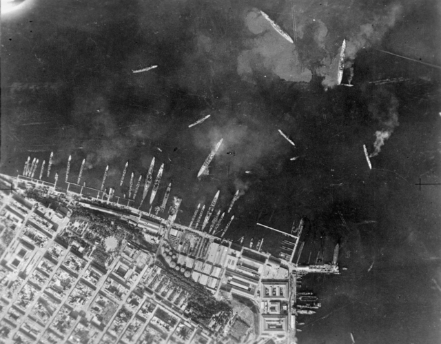
(습격 다음날인 11월 12일의 순양함-구축함이 계류된 마르 피콜로 항의 모습. 저기 보면 연료가 콸콸 쏟아져 나오는 것이 보이는 것 같지만, 사실 저기 보이는 지저분한 것들은 군함에서 새어나온 연료가 아니라, 군함이 이동하기 위해 스크루를 움직이면서 발생하는 해저면의 진흙탕과 각종 오물. 항구 바닥은 원래 매우 지저분하다고.)
실은 3척의 군함, 즉 구축함 Librecio와 Passagno, 그리고 순양함 Trento에 각각 1발씩의 폭탄이 명중. 문제는 폭탄이 기폭되지 않은 불발탄이었다는 것. 실은 투하된 대부분의 폭탄이 불발탄이었음. 수상기 계류장에 떨어진 폭탄들은 대부분 폭발한 것 같았고, 항구 연료 탱크 쪽에 투하된 것들 중 일부도 폭발한 것 같았지만, 절대 다수의 폭탄은 폭발하지 않았음. 이유는 불분명. 혹시 투하한 폭탄의 종류 때문이었을까? <박치기하는 폭탄> 당시 소드피쉬들이 투하한 폭탄들은 모두 250파운드짜리 Mark V 준(準)철갑탄(semi armour-piercing bomb). 이건 직경 23cm, 본체 길이 80cm (꼬리 날개까지 합하면 123cm) 크기의 비교적 작은 폭탄. 철갑탄이라는 것은 장갑을 뚫기 위해 뭔가 특별한 장치가 되어 있는 폭탄일까? 꼭 그런 것은 아니었고, 그냥 폭탄 casing, 즉 폭탄 껍데기, 특히 머리 부분이 두껍고 또 더 단단한 재질의 합금강 또는 고장력 강판으로 만들어졌을 뿐.
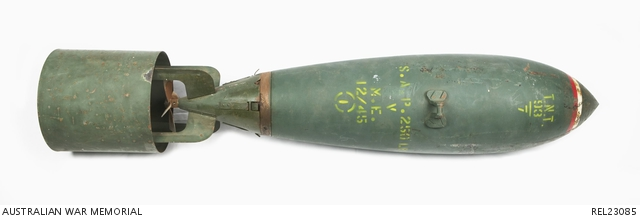
(이게 타란토 습격 때 사용된 250파운드짜리 Mark V SAP 폭탄)
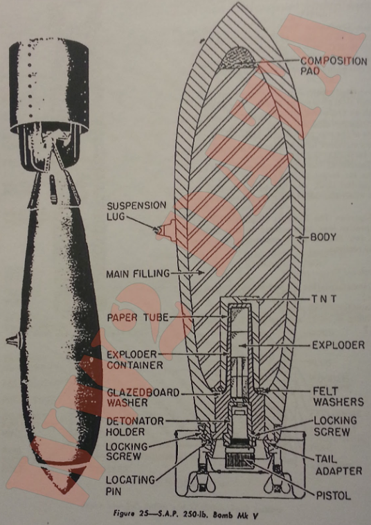
(준철갑탄인 250파운드짜리 Mark V SAP 폭탄의 단면도. 머리쪽이 특히 두꺼운 것을 쉽게 볼 수 있음.)
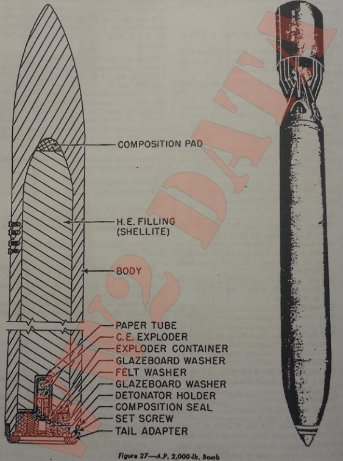
(2000파운드짜리 본격적인 철갑탄(AP)의 단면도. 저 어마무시하게 두꺼운 머리를 보라!) 폭탄의 무게를 뜻하는 250파운드 중에서, 일반 폭탄(general purpose bomb, 보통 GP bomb이라고 부름)의 경우엔 전체 무게 중 대략 50% 정도가 내부에 충전된 폭약의 무게. 그에 비해 철갑탄은 약 15%, 준철갑탄은 그 중간인 30% 정도. 당연히 철갑탄이나 준철갑탄은 제대로 폭발한다고 해도 같은 무게의 일반탄에 비해 폭발력은 떨어짐. 그러나 두꺼운 철판으로 둘러싸인 목표물, 가령 전함이나 순양함에 제대로 명중하여 그 장갑판을 뚫고 들어간다면, 밀폐된 군함 내부에서 폭발하므로 실제로 끼치는 피해는 더 큼.
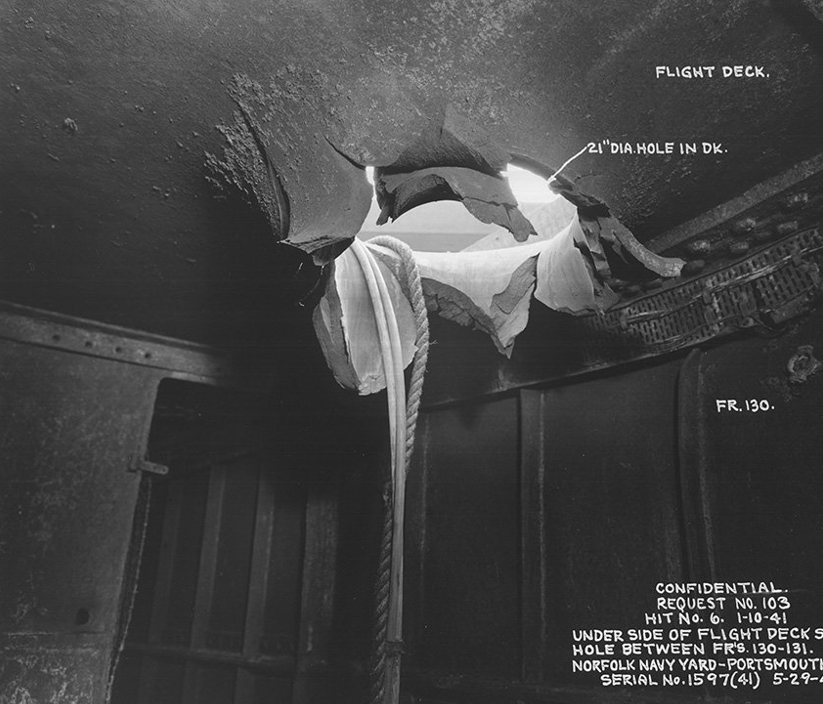
(이건 독일 공군 2200파운드짜리 철갑탄에 의해 뚫린 HMS Illustrious의 4.5인치 장갑 비행갑판 아래의 모습. 미국 노퍽 조병창에서 수리를 받았음.)
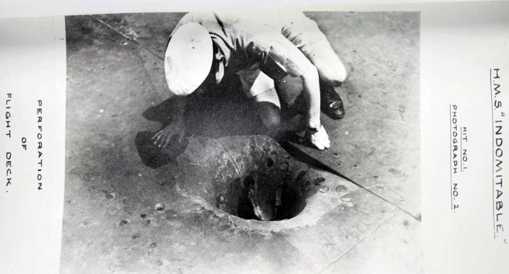
(이건 정체를 명확히 알 수 없는 폭탄에 의해 뚫린 HMS Indomitable의 장갑 갑판)
특히 그 피해를 최대화하기 위해, 폭탄에 달린 신관(detonator)도 세팅이 달랐음. 일반 폭탄은 목표물에 충돌하는 즉각 폭발했지만, 철갑탄은 폭발 후 꽤 긴 시간인 0.05~0.2초 정도 지난 뒤에 폭발이 일어나도록 지연 신관을 달았고, 준철갑탄은 그 중간 정도인 0.015~0.05초 정도의 지연 시간을 가졌음.
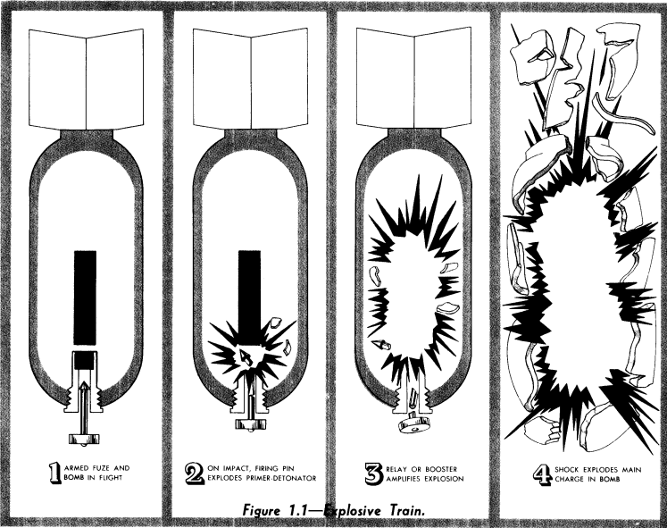
(밀덕들은 다들 아시겠지만 원래 폭탄 속에 쟁여지는 TNT나 Amatol 같은 폭약은 매우 안정적이라 어지간한 충격에는 기폭되지 않으며, 밀폐 강철통 속에 쟁여진 그런 폭약을 폭발시키기 위해서는 별도의 작은 폭탄을 그 강철통 안에서 터뜨려야 함. 그게 바로 기폭장치, 뇌관, 신관 등으로 불리는 물건임. 이 그림은 뇌관에 의해 폭탄이 터지는 과정을 보여주는 도식.)
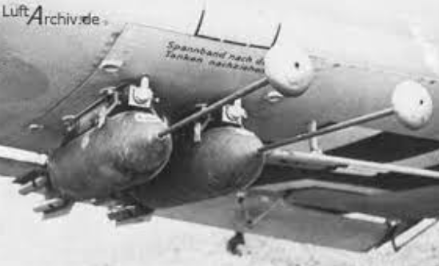
(심지어 목표물에 충돌하기 전에 폭발하도록 세팅된 폭탄도 있었음. 인마 살상용 일반 폭탄의 경우, 지면에 부딪힌 상태에서 폭발하는 것보다는 몇십 cm라도 지표면 상공에서 폭발하는 것이 폭풍과 파편 효과가 더 크기 때문. 그런데 몇십 cm 아래에 지표면이 있다는 것을 어떻게 폭탄에게 알려주지? 가장 간단한 방법이 저렇게 탄두의 기폭신관에 긴 쇠막대기를 달아두는 것. 폭탄은 대개 머리부터 떨어지므로, 저 쇠막대기가 먼저 땅에 부딪히게 되고, 그러면 저 쇠막대기 길이만큼의 높이에서 폭발이 일어남. 이건 독일군의 'rodded bomb')
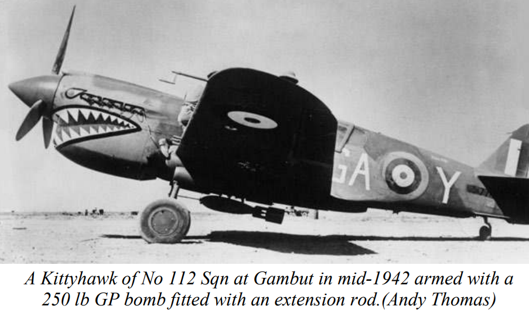
(이건 250파운드짜리 일반 'rodded bomb'을 장착한 영국 공군 소속 Curtiss P-40 전투기의 모습. 1942년 북아프리카에서의 모습인 듯.) 일반 폭탄과 철갑탄 또는 준철갑탄의 차이점은 케이싱의 재질과 두께 말고도 또 있었는데, 바로 신관의 위치와 개수. 일반 폭탄은 확실한 폭발을 위해 보통 머리와 꼬리에 각각 하나씩 신관을 장착시킴. 둘 중 하나만 기폭되어도 대폭발이 일어나는 것. 그러나 철갑탄과 준철갑탄은 장갑판을 박치기로 뚫는다는 특성 때문에, 머리에는 신관을 붙이지 못하고 꼬리에만 1개 장착. 그러니 이 꼬리의 신관이 무슨 이유에서든 기폭되지 않으면 그냥 불발탄이 되는 것.
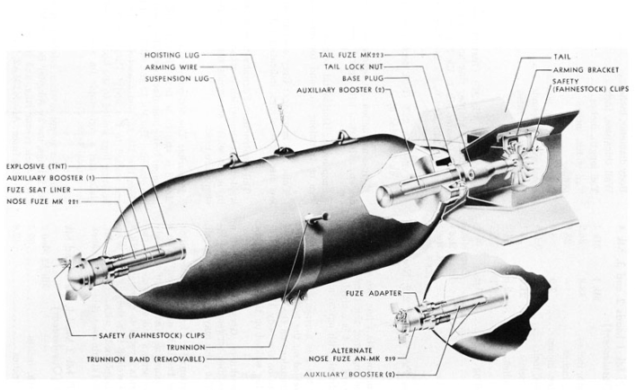 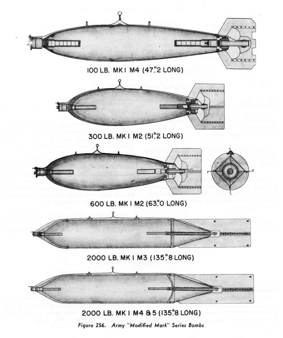
(일반 폭탄의 구조. 앞과 뒤에 각각 하나씩 신관이 장착됨.)
상식적으로도 꼬리의 신관보다는 머리의 신관이 더 확실하게 폭발할 것 같은데, 그래서 타란토 공습 때 불발탄이 그렇게 많았던 것일까? 그건 알 수 없음. 다만 WW2가 시작되기 전, 그런 AP 폭탄 및 SAP 폭탄이 어느 정도 두께의 장갑판을 뚫을 수 있는지, 또 관통하고 나서 어느 정도로 확실하게 기폭되는지 테스트한 기록이 있지 않을까? <영국제 폭탄의 테스트> 놀랍게도 그런 테스트는 사실상 없었음. 그것도 어느 정도 이해는 가는게, 항공기를 동원해서 그렇게 폭탄을 투하하는 것은 비용과 시간이 매우 많이 들어가는 작업. 게다가 목표물로 가로세로 20미터 정도 되는 큰 장갑판, 그것도 다양한 두께의 장갑판을 준비하는 것은 더더욱 비용과 시간이 많이 들어가는 일. 더더욱 문제는 실질적인 폭격 고도와 속도에서 폭탄을 투하했을 때 그런 20x20 = 400 평방미터의 장갑판에 명중시키는 일이 지극히 어렵다는 점. 이 모든 것은 결국 시간과 비용의 낭비로 이어졌음. 그래서 관통력이고 폭발력이고 전혀 테스트가 없었다는 말인가? 그건 또 아님. 대충 어느 정도의 고도에서 투하하면 어느 정도의 운동에너지를 가지는지 계산하여, 그 값만큼의 위력을 가지는 추진력으로 그 폭탄을 대포로 쏘아서 테스트했음. 그런데 그러면 대포 포신 안에서 폭탄이 기폭되어 폭발하지 않을까? 실제로 그럴 위험이 매우 컸음. 그래서 관통력은 그렇게 테스트하고, 관통한 뒤의 폭발력은 그냥 (관통된 뒤라고 가정하고) 밀폐된 강철 상자 안에 그 폭탄을 넣어두고 폭발시켜서 테스트함. 대충 테스트는 된 것 같은데... 결국 꼬리의 신관이 어느 정도 신뢰성 있는지는 테스트할 수가 없었던 것. <연료 저장고의 대폭발> 타란토 항구의 폭격 목표물 중에는 항구마다 당연히 있기 마련이었던 연료 저장고도 있었음. 여기에 250파운드 준철갑탄이 떨어졌으니 어지간한 연료 탱크는 당연히 뚫었을 것인데, 왜 대폭발과 대화재가 없었을까? 의외로 항구의 연료 저장고에 대폭발을 일으키는 일은 사실상 불가능. 이유는 그 속에 든 연료의 종류 때문. 흔히 생각하는 연료 탱크 대폭발은 그 속에 든 유류가 가솔린일 때 발생. 그러나 가솔린은 보통 프로펠러 항공기 및 차량에만 사용되었고, 항구에 있는 연료 저장고에는 선박용 연료인 중유(furnace oil, fuel oil)를 보관하는 것이 보통. 간혹 경유나 등유를 보관하기도 했지만, 중유는 물론이고 등유만 해도 아스팔트 바닥에 확 뿌린 뒤에 라이터로 불을 붙여도 불이 거의 붙지 않음. 원래 가솔린도 액체가 타는 것이 아님. 액체가 기화되면서 그게 산소와 섞여야 불이 붙을 수 있는 것인데, 가솔린과는 달리 중유는 물론이고 등유는 상온에서 별로 기화되지가 않음. 따라서 한 여름 떙볕에 달궈진 아스팔트가 아니라면, 그 위에 등유를 뿌리고 불을 붙여도 일부만 불이 붙을 뿐 잘 타지가 않음. 따라서 폭탄이 중유 탱크 한복판에서 폭발한다고 해도, 그만큼의 연료를 못 쓰게 만들고 주변을 지저분한 중유 범벅을 만들어서 이탈리아인들이 그 청소에 애를 먹게 만드는 것 외에는 큰 전과를 기대하기는 애초에 어려웠던 것. 1941년 12월, 진주만 공습 때도 일본해군은 미해군 연료 저장고를 폭격하지 않았는데, 비슷한 이유. 물론 전문적인 소이탄을 이용하여 공격했다면 효과를 좀 보았을 수도. 그러나 누가 그런 테스트를 미리 해볼 수 있었을까?
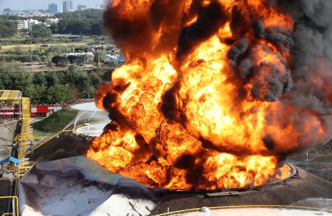 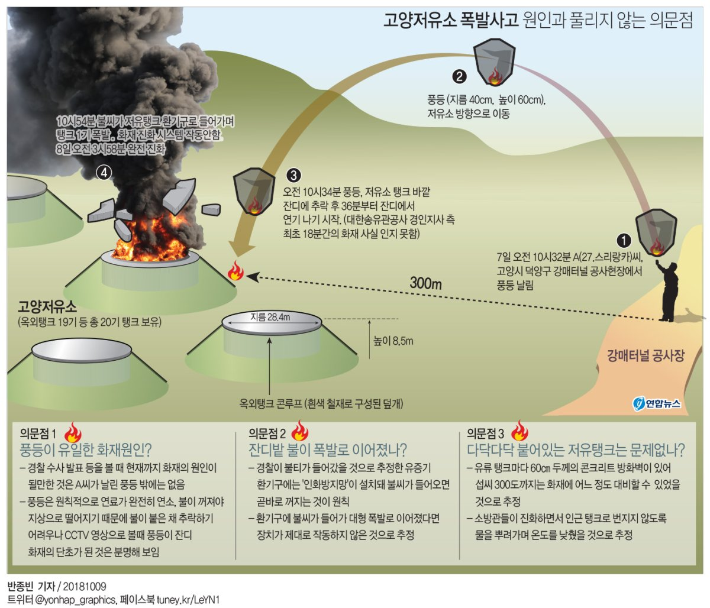
(기억하시는 분들 많을 텐데, 2018년 10월에 서울 인근 고양 저유소에 누군가 날린 풍등이 떨어져서 대화재가 발생한 사건이 있었음. 거기에는 왜 그런 대화재가 발생했을까? 거기에 저장된 것은 가솔린이었기 때문. 정말 위험한 상황이었음. 궁금해서 뒤져보니 그때 화재 원인을 제공했던 스리랑카 국적의 노동자는 결국 2심에서도 1천만원의 벌금을 받은 뒤 상고를 포기하고 쓸쓸히 귀국했다고. 저 화재로 인한 피해액은 110억원이었으니 1천만원으로 벌금이 그쳤고 추가 손해배상 민사소송이 없었던 것이 다행이라고 해야 할까?)
** 이로써 길었던 타란토 항구 습격 사건을 마무리합니다. 원래 의도는 야간에 어떻게 모함을 찾았고 어떻게 착함을 했을지가 궁금해서 시작한 것이었는데, 의외로 길어지고 내용도 이것저것 좌충우돌식으로 다루게 되었습니다. 다음 주에는 뭔가 더 재미난 레이더 이야기로 찾아뵙겠습니다. 즐거운 추석 맞이하세요~!